The College Dropout
Kanye's first album, The College Dropout, was released on Feb 10th 2004. Some of the most popular from that album are All Falls Down and Through the Wire, and it won a Grammy award.
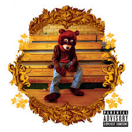
Late Registration
Late Registration was released on August 30 2005. Some popular songs are Gold Digger and Touch the Sky. This album also won a Grammy, and it is also widely considered as one of the greatest sophomore albums of all time.
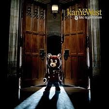
Graduation
Graduation was released on Sep 11 2007. Some popular songs are Stronger and Flashing Lights. Graduation won multiple Grammy awards, and is his most streamed album. People call it his best album.
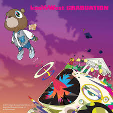
808s & Heartbreak
808s & Heartbreak was released on November 24 2008. A popular song is Heartbreak, which is his most streamed song. His mother sadly passed away before the album released, and the album was heavily based on that. Although this was different and a disappointment compared to the other albums, people call it Kanye's most influential album, because it shows rappers can also be emotionally exposed while staying at the top of the charts.
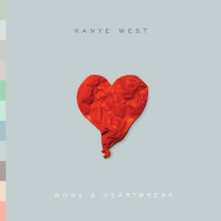
My Beautiful Dark
Twisted Fantasy
To redeem himself, Kanye created another album called My Beautiful Dark Twisted Fantasy, which was released on November 22 2010. Some popular songs are Runaway and POWER. The album won 2 Grammy awards. It is widely considered Kanye's magnum opus and most peoples favorite Kanye album.
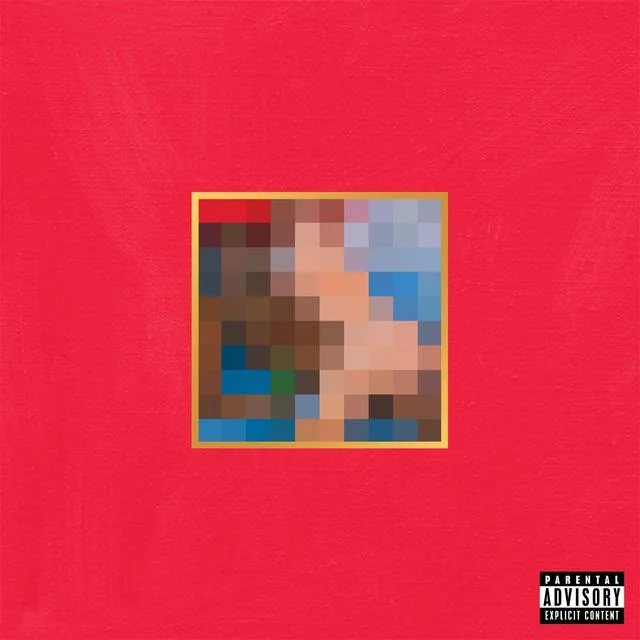
Yeezus
Yeezus was released on June 18 2013. Some popular songs are Bound 2 and Blood on the Leaves. This album was completely different from the other ones in terms of the music style. It was like an experiment.
When it first released, everyone said it destroyed the perfection of the previous album, now people call it one of the most influential albums of all time. The album was nominated, but it never won a Grammy, making Kanye frustrated.
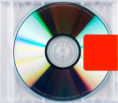
The Life of Pablo
The Life of Pablo was released on February 14 2016. Some popular songs are Father Stretch My Hands Pt. 1 and Famous. The album was nominated for 5 different awards, but sadly, he didn't win a single one, causing backlash from fans and criticism from music journalists, calling it a major snub. This was Kanye's second most streamed album.
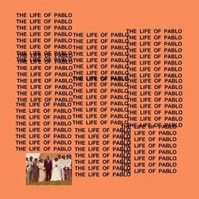
ye
ye was released on June 1 2018. Some popular songs are Ghost Town and Violent Crimes. People call Ghost Town one of Kanye's best songs of his career. This album was mainly focused on his mental health and his bipolar disorder diagnosis. The album wasn't even nominated for the Grammy's and was called a massive snub.
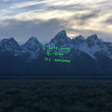
JESUS IS KING
JESUS IS KING was released on October 25 2019. Some popular songs are God is and Follow God. This was when Kanye converted to Christianity. This was the only album other than Donda where Kanye sweared zero times. The album won one Grammy award, and it was the Best Contemporary Christian Music Album.
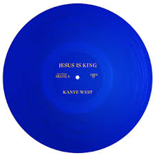
Donda
Donda was released on August 29 2021. Some popular songs are Hurricane and Off The Grid. This was a tribute to Kanye's mother, Donda, while also exploring his own grief. This was Kanye's most immense albums with 27 tracks. The album won 2 Grammy awards. The album cover is actually a plain black screen, this was just one of his great ideas.
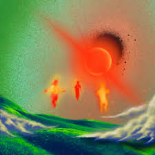
Vultures
VULTURES was released on February 10 2024. Some popular songs are BURN and CARNIVAL. This album was a collab with the artist Ty Dolla $ign. The album was really hated and Kanye apparently stole samples from other songs and got many lawsuits because of it. In this era, Kanye was hated too, because of his racist actions, and he started becoming a psychopath.
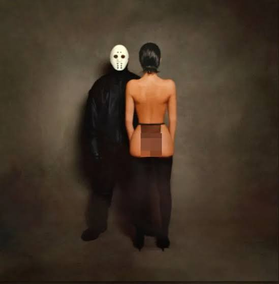
Vultures 2
VULTURES 2 was released on August 3 2024. Some popular songs are FIELD TRIP and RIVER. This album is known as Kanye's most sloppiest and laziest album. For some songs, Kanye didn't even use his real vocals. Instead, he used AI. This was Kanye's most hated album, and people were very disappointed.
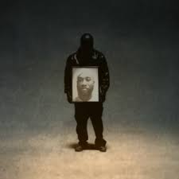